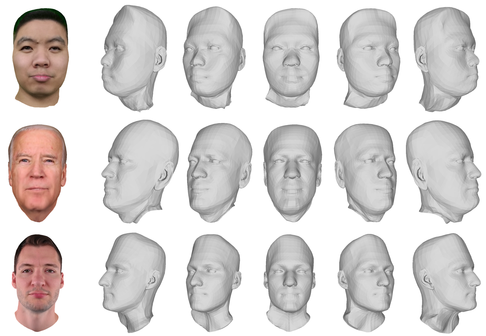

Abstract
Head avatar reconstruction is a crucial research topic with wide-ranging applications. For this purpose, utilizing the promising technique of 3D Gaussian splatting significantly improves rendering quality. However, this method encounters challenges, such as imprecise geometry and noisy surfaces. To address these issues, we propose HeteroAvatar, a novel method for generating a Gaussian head avatar with correct geometry from a monocular video of a dynamic head. To achieve this, we introduce the hetero rendering method, which concurrently employs both 3D Gaussian rendering and mesh rendering techniques during training. This approach enables HeteroAvatar to accurately capture the head geometry with smooth surfaces while maintaining photorealistic rendering quality. Additionally, our approach is capable of generating a mesh-based head avatar, which ensures compatibility with a wide range of traditional graphics applications. Experimental results demonstrate that HeteroAvatar outperforms state-of-the-art methods in terms of reconstructed geometry quality and photorealistic rendering with fewer 3D Gaussians.
Overview

Given a monocular video, a head tracker algorithm is employed to extract face-related parameters (\(\beta\), \(\psi\), \(\theta\)) along with a FLAME mesh model. We then utilize a geometry-guided 3D Gaussian initialization, where a 3D Gaussian is associated with each vertex of the mesh. This process yields both an initial Gaussian model \(\mathcal{G}_0\) and a corresponding mesh model \(\mathcal{M}_0\). Learnable features \(L_i\) are subsequently assigned to each vertex. The training pipeline utilizes canonical and deformation modules to refine the shape and learn Gaussian parameters, followed by the use of both mesh rendering and Gaussian rendering for image generation. Mesh rendering is essential for accurately capturing the geometry, as it ensures the alignment of 3D Gaussian centers with the actual head surface. Meanwhile, 3D Gaussian rendering contributes significantly to improving the visual quality. In the lower part of the figure, the red and blue blobs on the head models represent 3D Gaussians that are attached to base vertices and subdivided vertices, respectively. The green blobs represent free Gaussians for better image quality.
Generated Gaussian Head Models
We showcase the Gaussian positions of the generated Gaussian head avatars across multiple subjects, highlighting that our trained head avatar can produce accurate geometry with a smooth surface.
Comparison with State-of-The-Art
We conducted experiments to evaluate the performance of our method against state-of-the-art techniques. The qualitative findings reveal that our method performs on par with, or exceeds, the results achieved by existing state-of-the-art methods.
Novel-View Rendering
Following the generation of Gaussian head avatars using our method, our model consistently produces rendered images from novel viewpoints.
More Qualitative Results of Our Method
We present additional examples featuring various subjects, demonstrating that our trained head avatar is capable of generating photorealistic renderings.
Cross-Identity Reenactment
To illustrate the effectiveness of our approach, we conduct a cross-identity reenactment study with a range of subjects. The head avatars reconstructed using our method are capable of being controlled by the pose and expression of a different subject while producing plausible renderings.
Generated Mesh-based Head Models
Our approach also produces mesh-based head avatars, which are generated during the mesh rendering process, accurately capturing the underlying head geometry and producing detailed mesh models.
Compatibility
Our method is compatible with existing commercial graphics applications. This compatibility allows for the straightforward utilization of the generated mesh model in diverse applications, requiring only the provision of the mesh model and corresponding texture map.